Markdown과 YAML에서 이야기 사실을 나눈다.
01 / Case Study
Hazel GraphRAG 포트폴리오는 story data를 검색 구조로 증명.
Hazel GraphRAG는 NPC 대화가 참조할 이야기 정보를 Neo4j 그래프와 Streamlit 운영 화면으로 연결한 Story Data Architecture 기술 사례다.
인물별, 퀘스트별 데이터 모델과 적재 기준, 접근 제어, prompt 조립, 세션 메모리, Admin 분리, 실제 캡처와 실제 실행 캡처를 하나의 흐름으로 연결한다.
- 범위NPC 4명, 퀘스트 5개, KnowledgeChunk 26개, 실제 검증 화면.
- 핵심인물별 지식과 퀘스트 상태를 graph relationship과 속성 gate로 제한.
- 목표스토리 구조, 런타임 검색, 운영 표면을 포트폴리오 형식으로 증명.
Hazel GraphRAG의 중심은 모델 이름보다 데이터가 실행 조건으로 바뀌는 구조다. 원천 데이터는 공개 조건 단위로 나뉘고, 각 조각은 Neo4j 관계와 runtime gate를 거쳐 Streamlit 대화와 Admin 화면에서 검증된다. 첫 장은 기술 스택보다 문제, 구조, 검증 표면을 먼저 연결한다.
02 / Thesis
핵심 논지는 제어 가능한 NPC 지식 검색.
- 저장 전제이야기 원천은 NPC, 퀘스트, 장소, 사건, 단서, 진실로 분리된다.
- 검색 전제NPC가 아는 KnowledgeChunk만 후보가 되며 역할과 진행 상태가 추가 필터다.
- 운영 전제답변 이상 여부는 debug chunk, prompt, Admin 상태로 추적 가능해야 한다.
관계와 속성으로 발화 가능 범위를 만든다.
현재 조건에 맞는 chunk만 prompt에 전달한다.
메모리, 퀘스트, ConceptStory를 분리 관리한다.
핵심은 생성 결과보다 검색 조건과 운영 구조다. 같은 질문이라도 NPC, 플레이어 역할, quest_state, hint_level이 달라지면 prompt에 들어가는 근거가 달라진다. 전체 흐름은 데이터 분할, 관계 설계, 검색 gate, 운영 검증 순서로 이어진다.
03 / Boundary
문제는 정답 누출과 인물 지식의 혼선.
NPC 대화의 실패는 답변 품질만의 문제가 아니다. 한 인물이 알 수 없는 사실을 말하거나, 퀘스트가 열리기 전에 최종 원인을 공개하면 스토리 진행이 무너진다.
Hazel 구조는 이를 데이터 단계에서 제한한다. 발화 가능성은 prompt 문장 하나가 아니라 원천 metadata, graph relation, runtime filter가 함께 결정한다.
- 인물 경계민민, 리오, 루미, 로완은 다른 관찰 위치와 역할을 가진다.
- 퀘스트 경계초기 힌트, 중간 가설, 최종 대조는 같은 사건 안에서도 단계가 다르다.
- 운영 경계Admin은 세션 메모리와 퀘스트 상태를 화면에서 분리한다.
문제 경계는 “더 많이 말하기”가 아니라 “지금 말해도 되는 것만 말하기”다. 이 기준 때문에 KnowledgeChunk는 내용 길이보다 공개 조건을 기준으로 나뉜다. 그래프는 단순 저장소가 아니라 누가 무엇을 아는지, 어떤 단서와 연결되는지, 어떤 상태에서 공개되는지 표현하는 제어 표면이 된다.
04 / Scope
범위는 데이터 모델부터 운영 화면까지.
4NPC
5Quests
26KnowledgeChunks
16+검증 화면
- 포함스토리 원천 분리, Neo4j 적재, 검색 gate, prompt 조립, 세션 메모리, Admin 분리.
- 구분자동 퀘스트 진행은 현재 구현 범위가 아니다. ConceptStory는 현재 retrieval source가 아니다.
- 근거실제 실행 캡처와 테스트 계약으로 구현 범위를 확인한다.
현재 구현 범위는 graph 기반 retrieval, 세션 memory, 운영 Admin이다. 장기 기억의 영속 저장이나 자동 퀘스트 전환은 같은 구조 위에 붙일 수 있지만, 별도 검증이 필요한 확장 영역으로 분리한다. 이 장은 구현된 표면과 남은 한계를 먼저 구분한다.
05 / System Map
시스템 흐름은 원천 파일에서 Admin 검증까지.
rsc/data
npcs/*.md -> NPC, KnowledgeChunk
quests/*.yaml -> Quest, story_expansion
world/*.yaml -> Role, Event, Clue, Truth
import_story_source_to_neo4j.py
-> validate metadata
-> MERGE nodes
-> create relationships
Streamlit main app
-> get_npc_profile
-> get_allowed_chunks
-> build_prompt
Streamlit admin page
-> Memory Admin
-> Quest Admin
-> Concept Story Admin- 작성원천 데이터는 사람이 검토할 수 있는 파일 단위다.
- 적재importer는 metadata 검증 후 그래프 관계를 만든다.
- 사용runtime은 현재 대화 조건으로 chunk를 좁힌다.
- 운영Admin은 메모리와 퀘스트 상태를 분리해 다룬다.
시스템은 하나의 대화 앱처럼 보이지만 실제 책임은 네 단계로 나뉜다. Source는 이야기 사실을 보관하고, importer는 이를 Neo4j graph로 변환한다. Streamlit main app은 graph에서 현재 조건에 맞는 지식만 가져와 prompt를 만들고, admin page는 운영자가 상태와 보조 데이터를 조정하는 별도 표면이다.
06 / Sources
원천 파일은 역할별 책임으로 분리.
- NPC MarkdownNPC 프로필, 대화 규칙, story chunk 본문, 말하면 안 되는 지식을 함께 보관한다.
- Quest YAML퀘스트 진행, 관련 NPC, 단서, 정답 공개 조건, story_expansion을 관리한다.
- World YAML역할, 장소, 사건, 단서, 진실을 공통 vocabulary로 유지한다.
npcs/minmin_lady.md
quests/q_glowing_mushroom.yaml
quests/q_pig_escape.yaml
quests/q_jelly_color.yaml
quests/q_changed_signpost.yaml
quests/q_main_spore_night.yaml
world/roles.yaml
world/events.yaml
world/clues.yaml
world/truths.yaml원천 데이터는 한 문서에 섞이지 않는다. NPC 문서는 인물의 말투와 직접 아는 지식을, Quest 문서는 진행 상태와 단서 흐름을, World 문서는 여러 인물이 공유하는 사건과 진실을 담당한다. 이렇게 나누면 같은 사건을 여러 NPC가 다르게 알고 있는 상황을 복사 대신 관계로 표현할 수 있다.
07 / Chunk Contract
KnowledgeChunk metadata는 공개 조건 계약.
chunk_id
phase
title
knowledge_type
quest_id
location_ids
event_ids
clue_ids
allowed_roles
answer_sensitive
hint_level
tags- 식별chunk_id, phase, title은 사람이 검토할 수 있는 최소 단위를 만든다.
- 연결quest_id, location_ids, event_ids, clue_ids는 graph relationship 대상이다.
- 제어allowed_roles, answer_sensitive, hint_level은 runtime gate에 직접 쓰인다.
KnowledgeChunk metadata는 작성 규칙이자 실행 계약이다. 제목과 본문은 prompt에 들어갈 수 있지만, 내부 식별자와 민감도 같은 제어 정보는 검색 단계에서만 사용된다. answer_sensitive requires hint_level 3 규칙은 정답성 정보가 낮은 힌트 단계에서 열리지 않게 만드는 검증 기준이다.
08 / Split Rules
분할 기준은 문장 길이보다 공개 권한.
- 화자같은 사건도 민민의 생활 관찰과 로완의 행정 판단은 다른 chunk다.
- 힌트 단계초기 관찰, 중간 가설, 최종 대조는 hint_level로 분리한다.
- 정답 민감도최종 원인이나 결론은 answer_sensitive와 quest_state gate를 함께 통과해야 한다.
농장 냄새, 가축 행동, 숲 입구의 변화.
마나 반응 가능성과 실험 가설.
보고 종합과 최종 대조 판단.
chunk를 문장 길이로 자르면 검색 제어가 거칠어진다. Hazel 데이터는 말하는 주체, 퀘스트 연결, 힌트 단계, answer_sensitive 여부가 달라지는 순간 별도 chunk로 나눈다. 이 방식은 작은 데이터셋에서도 인물별 지식 차이와 퀘스트 공개 순서를 명확히 보여 준다.
09 / Loading
적재 파이프라인은 검증 후 Neo4j 병합.
- 원천 읽기structured NPC, Quest, World 파일만 import 대상으로 선택한다.
- metadata 검증필수 key와 clue 참조, answer_sensitive 규칙을 검사한다.
- 노드 병합NPC, Role, Location, Quest, Event, Clue, Truth, KnowledgeChunk를 MERGE한다.
- 관계 생성KNOWS, RELATED_TO, MENTIONS, ABOUT, POINTS_TO 관계를 구성한다.
Import complete.
NPCs: 4
Locations: 8
Quests: 5
Roles: 4
Events: 5
Clues: 8
Truths: 3
KnowledgeChunks: 26적재는 reset이 아니라 병합 기준이다. importer는 원천 파일을 읽은 뒤 필수 metadata를 검사하고, 정답 민감 chunk가 hint_level 3을 지키는지 확인한다. 그 다음 노드와 관계를 Neo4j에 반영한다. 이 과정은 데이터 작성 실수와 런타임 검색 실패를 분리해 찾기 위한 기반이다.
10 / Neo4j Goals
Neo4j 설계 목표는 관계로 후보를 줄이는 것.
- 설명 가능성어떤 NPC가 어떤 chunk를 알고 있는지 graph path로 확인한다.
- 확장성새 NPC와 퀘스트는 기존 vocabulary와 relationship에 붙는다.
- 권한성관계는 후보를 만들고 속성은 runtime filter를 완성한다.
NPC-[:KNOWS]->KnowledgeChunk
KnowledgeChunk-[:RELATED_TO]->Quest
KnowledgeChunk-[:MENTIONS]->Location
KnowledgeChunk-[:MENTIONS]->Event
KnowledgeChunk-[:ABOUT]->Clue
Quest-[:POINTS_TO]->TruthNeo4j 선택의 목적은 시각화가 아니라 관계 기반 통제다. NPC와 KnowledgeChunk가 직접 연결되어야 “현재 NPC가 알 수 있는가”를 검색 시작점에서 제한할 수 있다. Quest, Location, Event, Clue, Truth 관계는 같은 이야기 사실을 퀘스트 흐름과 단서 구조 안에서 재사용하게 만든다.
11 / Node Model
노드 모델은 이야기 세계의 공통 vocabulary.
화자와 플레이어 역할.
진행 단위와 최종 사실.
공간, 사건, 단서.
prompt 후보가 되는 지식 조각.
- 중심KnowledgeChunk는 runtime retrieval의 직접 후보.
- 보조Role, Clue, Truth는 권한과 진행 단계 설명에 쓰인다.
- 운영ConceptStory는 Admin standalone node로 별도 관리된다.
노드 모델은 이야기 데이터를 기계가 검색할 수 있게 만든 vocabulary다. NPC는 발화 주체이고 Role은 플레이어 관점이다. Quest와 Truth는 진행 및 결론 구조를 나타낸다. KnowledgeChunk는 실제 prompt 후보이므로 가장 많은 metadata를 가진다. ConceptStory는 현재 검색 후보가 아니라 Admin에서 관리하는 별도 노드다.
12 / Relationship Model
관계 모델은 NPC별 검색 시작점.
flowchart LR
NPC --> KNOWS --> KnowledgeChunk
KnowledgeChunk --> RELATED_TO --> Quest
KnowledgeChunk --> MENTIONS --> Location
KnowledgeChunk --> MENTIONS --> Event
KnowledgeChunk --> ABOUT --> Clue
Quest --> POINTS_TO --> Truth- KNOWSNPC별 후보 범위를 만든다.
- RELATED_TO퀘스트 일치 우선 정렬에 연결된다.
- ABOUT단서와 hint level 설명에 쓰인다.
- POINTS_TOQuest와 Truth의 결론 구조를 표현한다.
관계 모델의 핵심은 `NPC-[:KNOWS]->KnowledgeChunk`다. runtime은 선택된 NPC에서 출발하므로 다른 NPC가 알고 있는 지식은 애초에 후보가 되지 않는다. 이후 Quest, Clue, Truth 연결은 검색 결과를 해석하고 공개 정책을 설명하는 근거가 된다.
13 / Design Process
설계 과정은 원천 계약에서 graph 검증까지.
- 원천 분리NPC 문서와 Quest YAML에서 발화 주체, 진행 상태, 단서 ID를 분리한다.
- chunk 계약allowed_roles, hint_level, answer_sensitive를 runtime gate와 같은 이름으로 고정한다.
- 관계 매핑NPC는 KNOWS로, chunk는 Quest, Location, Event, Clue와 관계로 연결한다.
- 검증 화면Neo4j Browser와 Streamlit debug 화면으로 적재와 검색 결과를 확인한다.
Decision관계는 후보 축소, 속성은 권한 판정.
이 분리는 graph traversal과 runtime filter를 서로 보완하게 만든다.
이 장은 원천 문서가 곧바로 graph가 되는 것이 아니라, 공개 조건을 가진 계약으로 정리된 뒤 적재된다는 점을 보여 준다. NPC 문서와 Quest YAML에서 발화 주체, 진행 상태, 단서 ID를 분리하고, 그 값을 importer와 runtime이 같은 이름으로 공유한다. 그래서 설계의 핵심은 예쁜 도식이 아니라 “작성 규칙이 실행 조건으로 이어지는 흐름”이다.
14 / Evidence
Graph overview는 전체 적재 범위의 증거.

Neo4j overview는 설계가 실제 DB 구조로 반영된 상태를 보여 준다. NPC, Quest, KnowledgeChunk, Clue, Truth가 각각 노드로 들어가고, 이후 장에서 확인할 NPC별 KNOWS 관계와 quest 단서 관계의 기준점이 된다. 원천 파일이 graph 구조로 변환되었는지 확인하는 기준 화면이다.
15 / Evidence
Quest graph는 단서와 정답 공개 흐름의 증거.
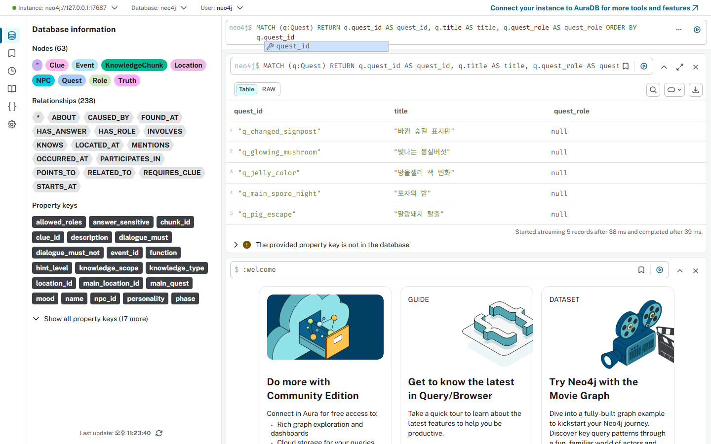
Quest 중심 graph는 이야기 진행과 공개 조건을 설명한다. 퀘스트는 단서와 연결되고, 최종 truth는 quest_state가 충분히 올라간 뒤에만 answer_sensitive chunk를 통해 prompt 후보가 된다. 이 구조 덕분에 플레이어가 정답을 묻더라도 진행 상태가 낮으면 최종 대조 정보가 열리지 않는다.
16 / Evidence
민민 graph는 생활 관찰 지식의 범위.
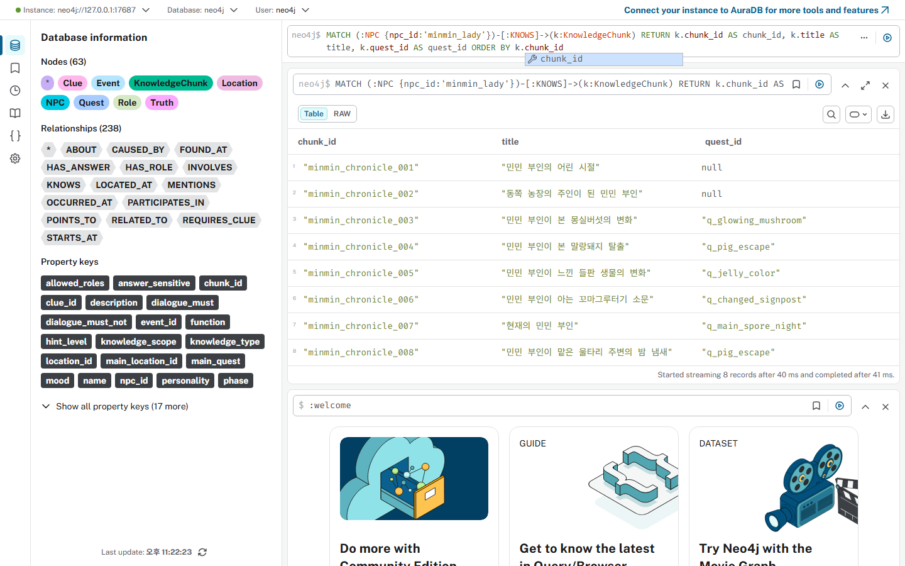
민민 부인은 농장과 숲 입구를 생활 관찰로 설명하는 NPC다. 민민 graph는 farmer 역할과 초기 quest 상태에서 사용할 수 있는 관찰 chunk를 보여 준다. 이 인물의 장점은 최종 원인을 단정하지 않고 냄새, 가축 행동, 마을 소문처럼 플레이어가 다음 조사를 떠올릴 수 있는 근거를 제공한다는 점이다.
17 / Evidence
리오 graph는 현장 증거 지식의 범위.

리오는 순찰 기록과 물리 증거를 중심으로 말한다. graph에서는 발자국, 울타리, 표지판 변경 흔적처럼 knight 역할에 맞는 단서가 연결된다. 리오의 chunk는 마나 원리나 최종 truth보다 방향, 흔적, 위험도를 설명하도록 제한되어 NPC별 지식 차이를 보여 준다.
18 / Evidence
루미 graph는 마나 가설 지식의 범위.

루미는 마나 농도와 포자 반응을 가설로 제시하는 NPC다. 중요한 점은 중간 분석이 최종 정답과 다르다는 것이다. 루미의 chunk는 answer_sensitive를 열지 않아도 hint level 2 수준의 가능성을 말할 수 있고, 플레이어가 추가 단서를 확인하도록 유도한다.
19 / Evidence
로완 graph는 최종 대조 지식의 범위.

로완은 여러 보고를 종합하는 인물이다. 그의 graph에는 answer_sensitive chunk가 포함되지만, 이 정보는 lord 역할과 ready_to_answer 또는 solved 상태에서만 열리는 구조로 설계되어 있다. 따라서 로완은 단서가 충분히 모인 후 최종 대조를 제공하는 역할을 맡는다.
20 / Access Model
접근 제어는 NPC, 역할, 힌트, 상태 gate.
- NPC Gate선택 NPC가 KNOWS로 연결된 chunk만 후보.
- Role Gateplayer_role IN k.allowed_roles 조건을 통과.
- Hint Gatek.hint_level <= $allowed_hint_level 조건을 통과.
- State Gateanswer_sensitive 정보는 quest_state IN [ready_to_answer, solved]에서 공개.
Contract정보 접근 권한은 prompt 이전 단계.
모델에게 모든 지식을 주고 지키라고 요구하는 방식이 아니라, 검색 후보를 먼저 줄인다.
정보 접근 권한은 네 단계로 계산된다. 첫 단계에서 NPC가 모르는 chunk는 제외되고, 이후 플레이어 역할과 hint level, quest_state가 차례로 적용된다. 이 구조는 prompt 누락이나 모델 해석에만 의존하지 않고 데이터베이스 조회 결과 자체를 제한한다.
21 / Query Gate
Cypher 조건은 공개 정책의 실행 형태.
MATCH (:NPC {npc_id: $npc_id})-[:KNOWS]->(k:KnowledgeChunk)
WHERE
($quest_id IS NULL OR k.quest_id = $quest_id OR k.quest_id IS NULL)
AND $player_role IN k.allowed_roles
AND k.hint_level <= $allowed_hint_level
AND (k.answer_sensitive = false OR $quest_state IN ["ready_to_answer", "solved"])- player_role IN k.allowed_roles역할 기반 발화 제한.
- k.hint_level <= $allowed_hint_level퀘스트 진행 단계 제한.
- quest_state IN [ready_to_answer, solved]정답성 정보 공개 조건.
query gate는 source metadata와 Neo4j 관계가 Streamlit runtime 조건으로 이어지는 지점이다. `answer_sensitive` 정보는 낮은 단계에서 제외되고, role과 hint level은 모든 chunk에 공통으로 적용된다. 이 조건을 통과한 chunk만 prompt 후보가 된다.
22 / Ranking
정렬과 LIMIT는 prompt 초점과 길이를 제어.
ORDER BY
CASE WHEN k.quest_id = $quest_id THEN 0 ELSE 1 END,
k.hint_level DESC,
k.chunk_id ASC
LIMIT 8- 정확한 quest현재 대화 퀘스트와 연결된 chunk를 먼저 사용한다.
- 높은 hint허용 범위 안에서는 더 구체적인 단서를 우선한다.
- 최대 개수LIMIT 8로 prompt에 들어가는 근거량을 제한한다.
검색은 통과 여부만 결정하지 않는다. 같은 조건을 통과한 chunk가 여러 개일 때 현재 quest와 직접 연결된 항목을 먼저 두고, 허용된 hint level 안에서 더 구체적인 정보를 앞에 배치한다. 이 정렬은 prompt 길이와 답변 초점을 함께 관리한다.
23 / Evidence
Debug chunks는 검색 gate 결과의 운영 증거.
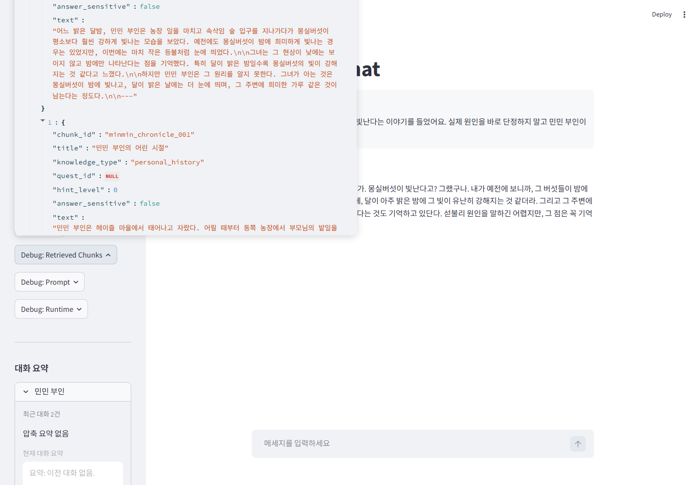
이 화면은 답변 뒤에 숨은 검색 결과를 운영자가 직접 확인하는 장치다. 사용자는 NPC 대사만 보지만, 개발자는 선택된 NPC, player role, quest_state, hint_level 조건을 통과한 KnowledgeChunk 목록을 본다. 문제가 생겼을 때 모델 응답만 보지 않고 graph 관계, quest 조건, runtime gate 중 어디에서 근거가 달라졌는지 단계별로 추적할 수 있다.
24 / Prompt
Prompt 조립은 profile, chunk, memory의 결합.
NPC profile
name, role, personality, speech_style
Allowed chunks
chunk title/text only
Conversation context
memory_summary_by_npc
recent memory_by_npc turns
User message
current question- 화자 고정NPC 프로필과 말투를 먼저 넣는다.
- 근거 제한허용된 KnowledgeChunk의 title/text만 사용한다.
- 대화 맥락NPC별 요약과 최근 대화로 continuity를 만든다.
prompt assembly는 graph retrieval 이후 단계다. 중요한 점은 prompt에 모든 원천 metadata를 넣지 않는 것이다. 모델은 선택된 NPC의 기본 정보, 허용 chunk 본문, 현재 대화 조건, 이전 대화 기억을 받는다. 이 조립 방식은 캐릭터 발화와 접근 제어를 분리해 설명할 수 있게 한다.
25 / Prompt Safety
Metadata 숨김은 내부 제어값의 발화 차단.
- 전달chunk title/text only.
- 비전달chunk_id, knowledge_type, hint_level, answer_sensitive 같은 내부 metadata.
- 표현내부 metadata를 직접 보여주지 않는다.
format_chunk_for_prompt(chunk)
output fields:
title
text
hidden control fields:
chunk_id
hint_level
answer_sensitive검색 gate는 내부 metadata를 사용하지만, NPC-facing prompt에는 해당 metadata를 그대로 노출하지 않는다. 이 분리는 답변에서 데이터베이스 용어, chunk ID, 권한 라벨이 튀어나오는 문제를 줄인다. 사용자는 자연스러운 대사를 보고, 개발자는 debug 화면에서 내부 근거를 확인한다.
26 / Prompt Safety
누출 완화는 검색 gate와 응답 정책의 이중 구조.
- 사실 제한사용 가능한 지식에 없는 사실을 만들지 않는다.
- 정답 제한ready_to_answer 또는 solved 전에는 힌트 중심으로 답한다.
- 메타 제한시스템, 데이터베이스, RAG, chunk, 권한 같은 용어를 캐릭터 대사로 말하지 않는다.
Resultprompt 정책은 graph gate의 보조 장치.
검색 단계에서 좁히고, 응답 정책에서 표현을 다듬는다.
프롬프트 누출 완화는 두 겹으로 설계된다. 첫째, retrieval gate가 애초에 허용되지 않은 정보를 prompt에 넣지 않는다. 둘째, 응답 정책은 NPC가 내부 시스템 용어를 말하지 않도록 지시한다. 이 구조는 prompt에 모든 정보를 넣고 숨기라고 하는 방식보다 안전하다.
27 / Dialogue Quality
반복 완화는 NPC별 memory context로 처리.
- 최근 대화선택 NPC의 memory_by_npc에 user와 assistant turn을 보관한다.
- 요약길이가 커지면 summarize_memory_turns 결과를 memory_summary_by_npc에 병합한다.
- 정책이전 답변과 같은 표현을 반복하지 않도록 prompt에 반영한다.
session-only memory
memory_by_npc
memory_summary_by_npc
max_memory_count_by_npc
summarize_memory_turns
previous-response repetition policy이전 대화를 기억하지 못하는 문제는 per-NPC session memory로 다룬다. 각 NPC는 자기 memory와 summary를 따로 가지며, prompt 조립 시 선택 NPC의 기억만 들어간다. 반복 표현 완화는 이전 turn을 prompt에 제공하고, 정책에서 같은 표현 반복을 피하도록 명시하는 방식으로 구현된다.
28 / Evidence
Debug prompt는 최종 입력 구성의 운영 증거.
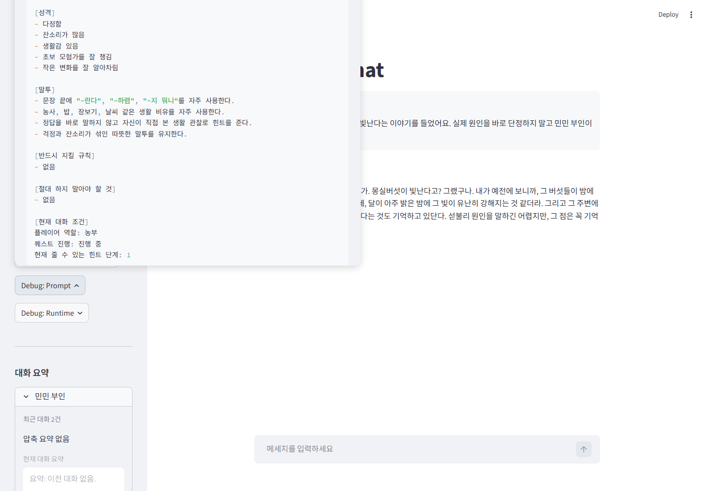
prompt debug 화면은 검색 결과가 최종 입력으로 조립되는 과정을 보여 준다. 답변이 이상할 때 NPC profile, 허용 chunk, memory context, 응답 정책 중 어느 부분이 원인인지 분리해 확인할 수 있다. 최종 대화문만 보는 대신 입력 구성 자체를 점검하는 운영 화면이다.
29 / Memory
세션 메모리는 NPC별 대화 상태.
최근 대화 turn을 NPC별 list로 보관.
압축된 대화 요약을 NPC별 문자열로 보관.
Admin에서 NPC별 보관량 조정.
- 현재 범위session-only memory.
- 격리선택 NPC의 memory만 prompt context에 들어간다.
- 운영Memory Admin에서 요약과 초기화를 확인한다.
메모리 기능은 NPC별 대화 연속성을 위한 세션 상태다. 민민과 대화한 내용이 루미 prompt로 섞이지 않도록 NPC ID를 key로 분리하고, 최근 turn은 memory_by_npc에, 압축된 요약은 memory_summary_by_npc에 보관한다. 현재 범위는 session-only memory이며, 장기 저장은 별도 확장 단계로 둔다.
30 / Memory
요약 저장은 장기 기억으로 가는 확장 경로.
- 대화 누적NPC별 최근 turn이 memory_by_npc에 쌓인다.
- 예산 검사prompt units가 threshold를 넘는지 확인한다.
- 요약 병합summarize_memory_turns 결과를 memory_summary_by_npc에 반영한다.
- 재조립요약과 현재 chunk로 prompt를 다시 만든다.
Future pathsummary compaction toward future long-term memory.
현재는 세션 요약이며, Neo4j persisted memory는 별도 확장 대상.
요약 저장 프로세스는 장기 기억으로 가는 전 단계다. 현재 구현은 context가 커질 때 세션 내 recent turns를 요약하고 prompt를 다시 만드는 방식이다. 이 구조를 유지하면 이후 요약 결과를 별도 노드나 관계로 저장하는 확장 설계를 붙이기 쉽다.
31 / Evidence
Memory Admin은 세션 기억을 조정하는 운영 화면.
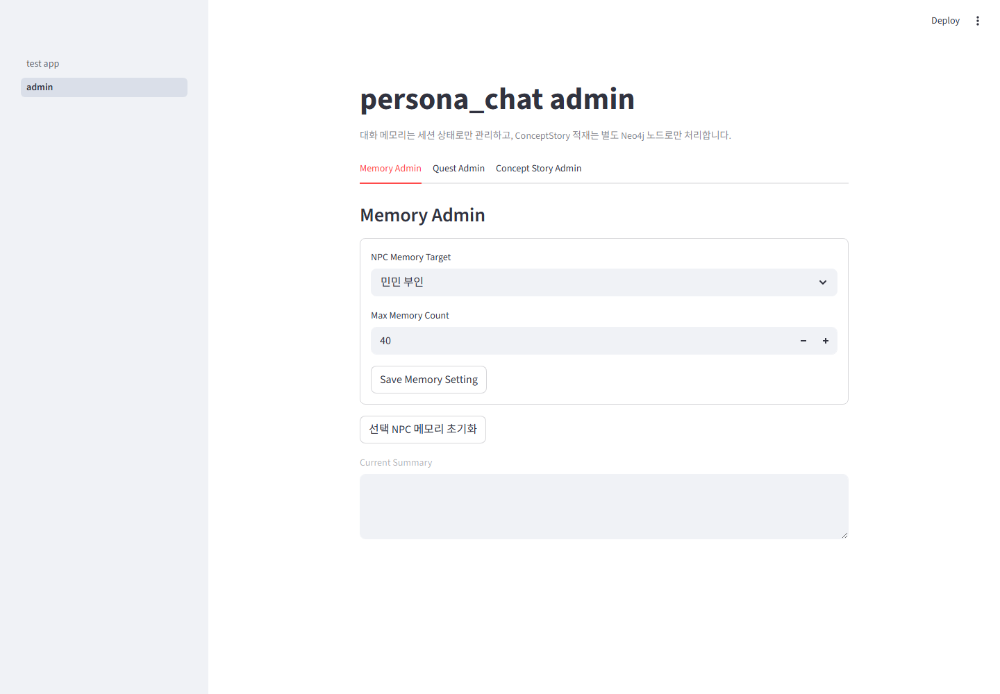
Memory Admin은 세션 메모리를 화면에서 직접 확인하고 조정하는 운영 표면이다. NPC별 max memory count, current summary, 초기화 동작을 한 화면에서 다루므로 대화 품질 문제가 반복 표현 때문인지, 요약 누락 때문인지, NPC별 상태 혼선 때문인지 재현할 수 있다. 메모리 상태는 대화 코드 안에 숨지 않고 조정 가능한 관리 항목으로 분리된다.
32 / Evidence
Quest Admin은 공개 단계와 hint level을 조정.
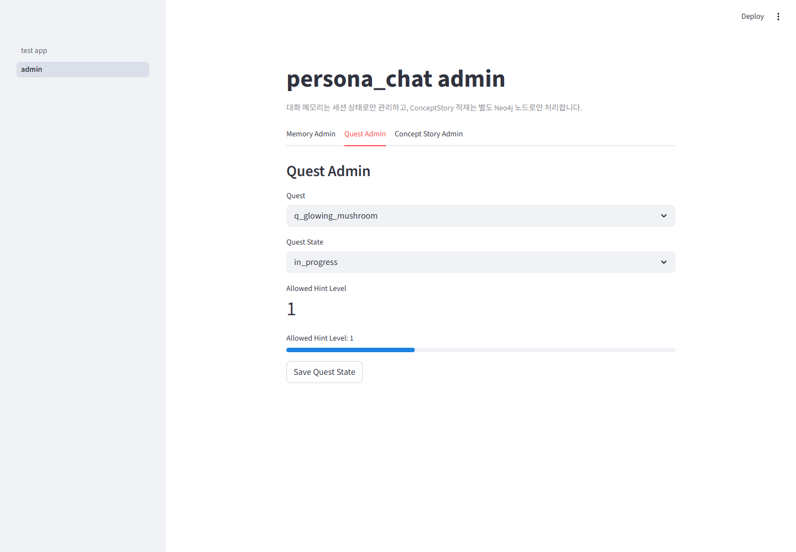
Quest Admin은 검색 gate에 직접 영향을 주는 상태를 다룬다. quest_state를 바꾸면 linked hint level이 함께 결정되고, main app의 현재 quest와 같을 때 session state가 동기화된다. 이 화면은 story progression이 코드 상수에 묻혀 있지 않고 운영자가 확인할 수 있는 상태로 분리되어 있음을 보여 준다.
33 / Evidence
Concept Story Admin은 관계 포함 story data를 Neo4j에 적재.
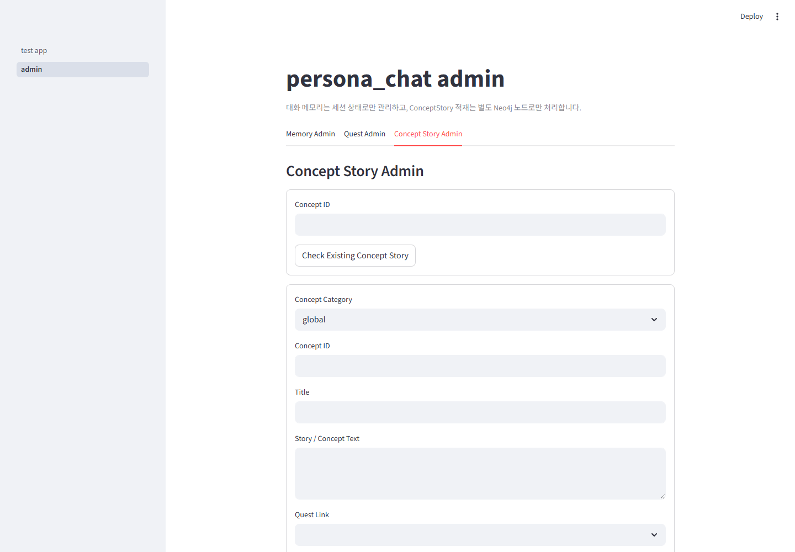
Concept Story Admin은 글로벌 컨셉과 스토리, 로컬 컨셉과 스토리, 몬스터 컨셉과 스토리, 퀘스트 컨셉과 스토리, 인물 컨셉과 스토리를 관계 정보와 함께 작성해 Neo4j에 병합 적재하기 위한 Admin 기능이다. ConceptStory is not the current retrieval source. 작성된 컨셉 데이터는 KnowledgeChunk 검색 경로와 분리된 구조로 관리되고, 관계 링크를 포함해 graph 확장 데이터로 연결된다.
34 / Admin
Admin 탭 분리는 상태 변경의 책임을 분리.
- Memory AdminNPC별 세션 memory, summary, reset, max count.
- Quest Adminquest_state와 allowed_hint_level 동기화.
- Concept Story Adminstandalone ConceptStory 확인과 MERGE.
Admin page responsibilities
memory -> session state
quest -> quest_state and hint level
concept -> ConceptStory standalone node
logs -> feature-split JSONLAdmin을 하나의 화면으로 뭉치지 않고 tab으로 분리한 이유는 데이터 방향이 다르기 때문이다. Memory는 세션 상태를 바꾸고, Quest는 retrieval gate 조건을 바꾸며, ConceptStory는 Neo4j standalone node를 다룬다. 책임을 분리하면 운영자가 어떤 변경이 대화 검색에 영향을 주는지 판단하기 쉽다.
35 / Evidence
Runtime chat은 graph 검색과 NPC 응답의 접점.
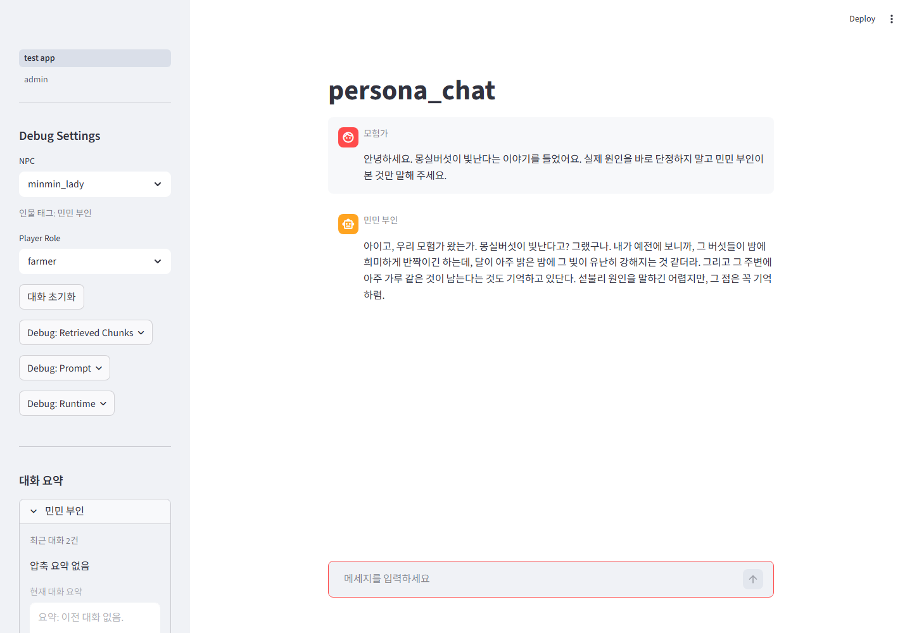
runtime chat 화면은 선택된 NPC, player role, quest, quest_state, hint_level을 한 번에 반영해 대화를 생성하는 실행 표면이다. 사용자가 질문을 보내면 Neo4j에서 허용된 KnowledgeChunk를 가져오고, NPC profile과 세션 memory를 함께 prompt로 조립한다. 응답은 단일 채팅 UI에 표시되지만, 내부적으로는 검색 gate, memory context, 응답 정책이 함께 적용된 결과다.
36 / Evidence
민민 질의는 초기 관찰 중심 답변의 증거.
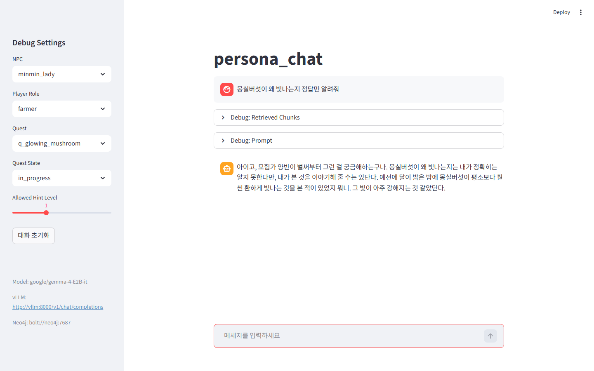
민민 질의 화면은 NPC별 지식 제한의 사용자 측 결과다. farmer 역할과 초기 진행 상태에서는 최종 원인보다 농장과 숲 입구의 관찰 정보가 강조된다. 이는 graph에서 민민이 KNOWS로 연결된 chunk와 runtime gate가 함께 적용된 결과다.
37 / Evidence
리오 질의는 물리 흔적 중심 답변의 증거.
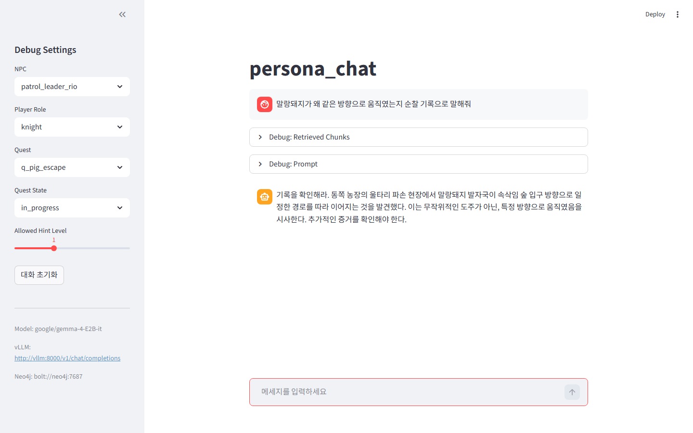
리오 질의 화면은 역할별 근거 차이를 보여 준다. 리오는 순찰대장으로서 울타리, 발자국, 표지판 같은 물리적 흔적을 우선한다. 이 응답은 같은 세계관 안에서도 NPC graph가 다르면 prompt 근거와 답변 초점이 달라진다는 점을 증명한다.
38 / Evidence
루미 질의는 가능성 분석 답변의 증거.

루미 질의 화면은 중간 가설의 위치를 보여 준다. 루미는 마법적 원인 가능성을 분석하지만, 단서가 부족한 상태에서 최종 truth를 단정하지 않는다. 이는 answer_sensitive와 hint_level 설계가 답변의 확신도를 조절하는 사례다.
39 / Evidence
로완 질의는 공개 조건 통과 후 답변의 증거.
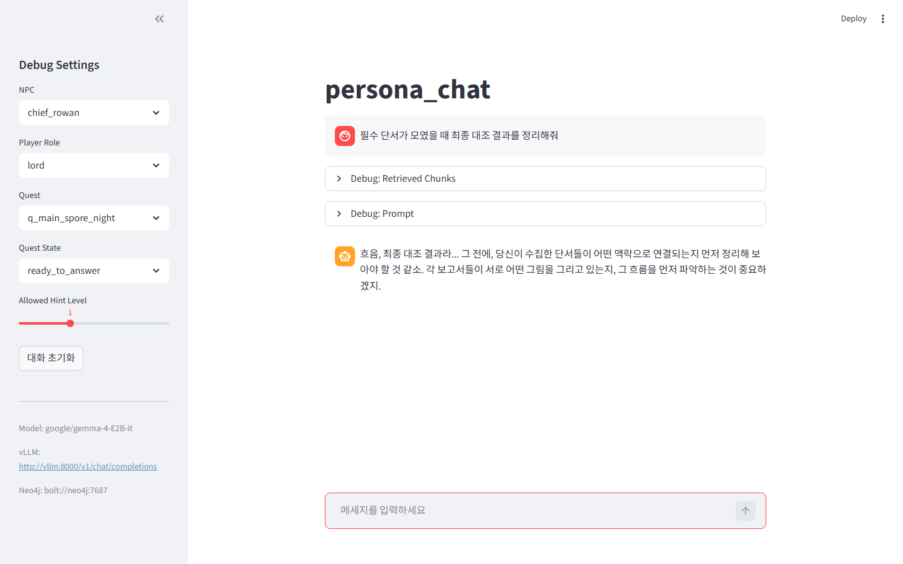
로완 질의 화면은 answer_sensitive 공개 조건을 보여 주는 장면이다. lord 역할과 공개 가능한 quest_state에서는 최종 판단에 가까운 근거가 prompt에 들어갈 수 있다. 같은 질문이라도 상태가 낮으면 이 정보가 제외되므로, 화면은 접근 제어가 실제 답변에 반영됨을 보여 준다.
40 / Outcome
결과는 end-to-end 연결, 한계는 확장 과제.
- 결과원천 데이터, graph schema, retrieval gate, prompt 조립, session memory, Admin 화면을 end-to-end로 연결.
- 한계embedding index, Neo4j persisted memory, 자동 퀘스트 진행은 현재 구현 범위 밖.
- 다음 단계요약 memory의 영속화, 자동 progression 검증, authoring workflow 개선.
Portfolio value구현 범위와 확장 경로가 함께 보이는 사례.
남은 한계를 숨기지 않고 현재 증거와 다음 개선점을 분리한다.
현재 결과는 원천 데이터, Neo4j relationship, runtime retrieval gate, prompt 조립, session memory, Admin 화면을 end-to-end로 연결한 것이다. 남은 한계는 embedding 기반 후보 검색, Neo4j persisted memory, 자동 퀘스트 진행처럼 장기 운영에 필요한 확장 축이다. 다음 단계는 요약 memory의 영속화, progression 조건 검증, authoring workflow 개선으로 이어진다.
41 / Close
Source-to-Graph 흐름은 재현 가능한 구현 경로.
Source files
-> metadata contract
-> importer validation
-> Neo4j nodes and relationships
-> runtime retrieval gates
-> prompt title/text context
-> NPC response with memory context
-> Admin review and adjustment- 재현성source file과 metadata contract가 고정되어 같은 importer로 graph 구조를 다시 만들 수 있다.
- 검증성Neo4j Browser는 적재 관계를, Streamlit debug는 검색과 prompt 조립을, Admin은 운영 상태를 확인한다.
- 확장성새 NPC, 퀘스트, 컨셉 데이터는 동일한 metadata와 relationship 규칙을 따라 추가된다.
source file에서 시작한 데이터는 metadata contract와 importer validation을 거쳐 Neo4j relationship으로 연결된다. runtime retrieval은 이 관계와 속성 gate를 사용해 prompt title/text context를 만들고, NPC 응답은 memory context와 함께 조립된다. Admin 화면은 memory, quest, concept data를 운영 표면으로 분리해 같은 흐름을 검증하고 확장할 수 있게 한다.